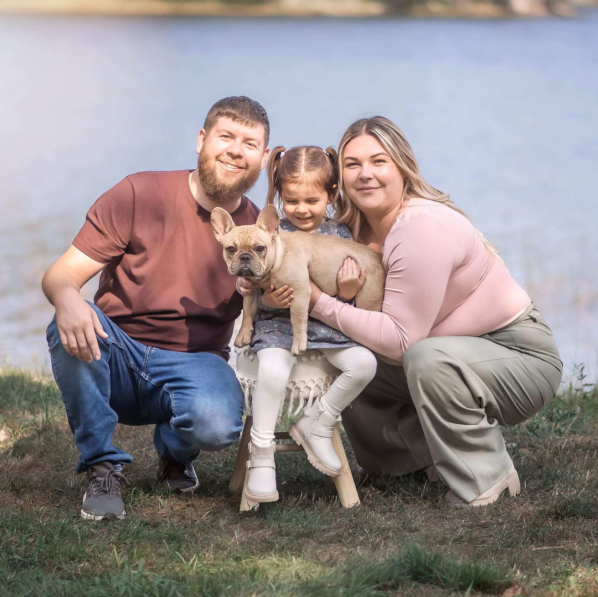

Crafting Digital
Experiences That
Leave a Mark.
As an aspiring Full-Stack developer, I am excited to turn ideas into innovative applications. Learning new programming languages and concepts is one of my new favorite things. I can't wait to see what we can create together.

Latest Codes
You can explore all other repos at my GitHub.